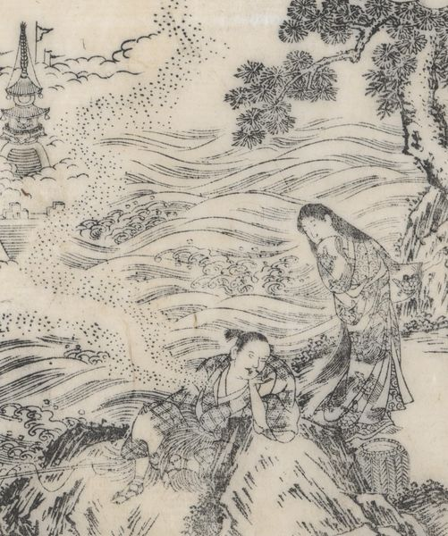

浦島が子と龍女。浦島が子は腰蓑をつけ、右手に釣り竿を持ち、左手で頬杖をついて夢を見ている。龍女は亀柄の着物を着て右手を口元に当てて立っている。岩場。
著作者：秋里翁・西村中和／出典：親書誌：U426_nichibunken_0446：本朝年代記圖會／日付：2017／資源識別子：U426_nichibunken_0446_0008_0000
Copyright (c)2010- International Research Center for Japanese Studies, Kyoto, Japan. All rights reserved.